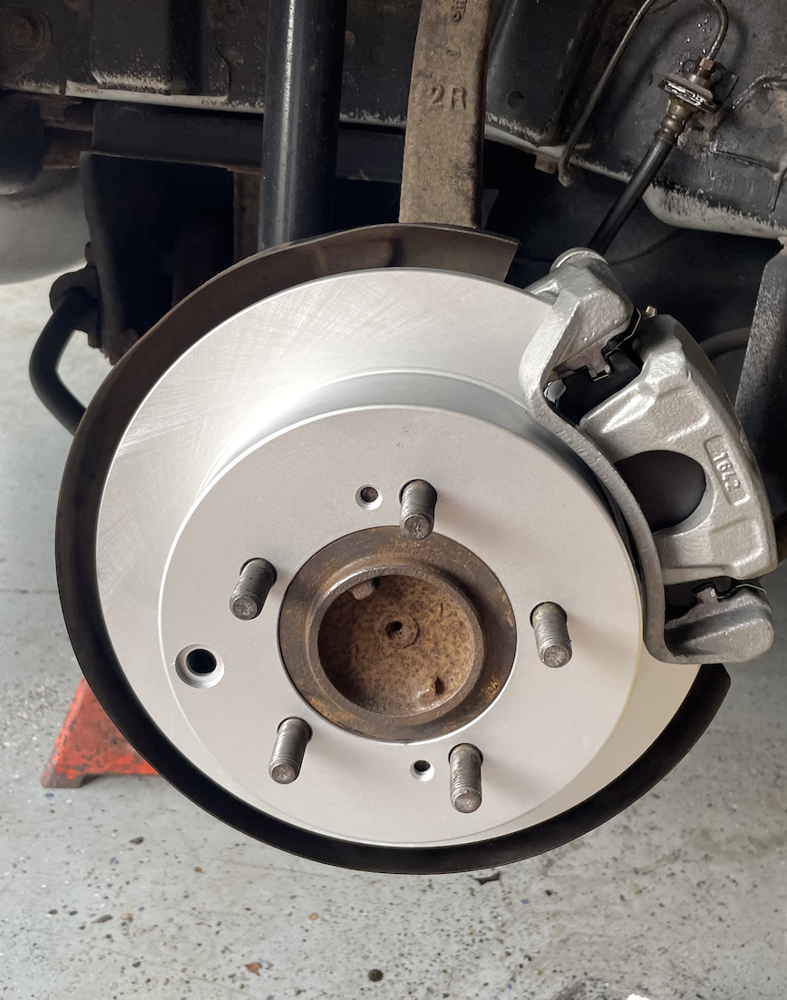
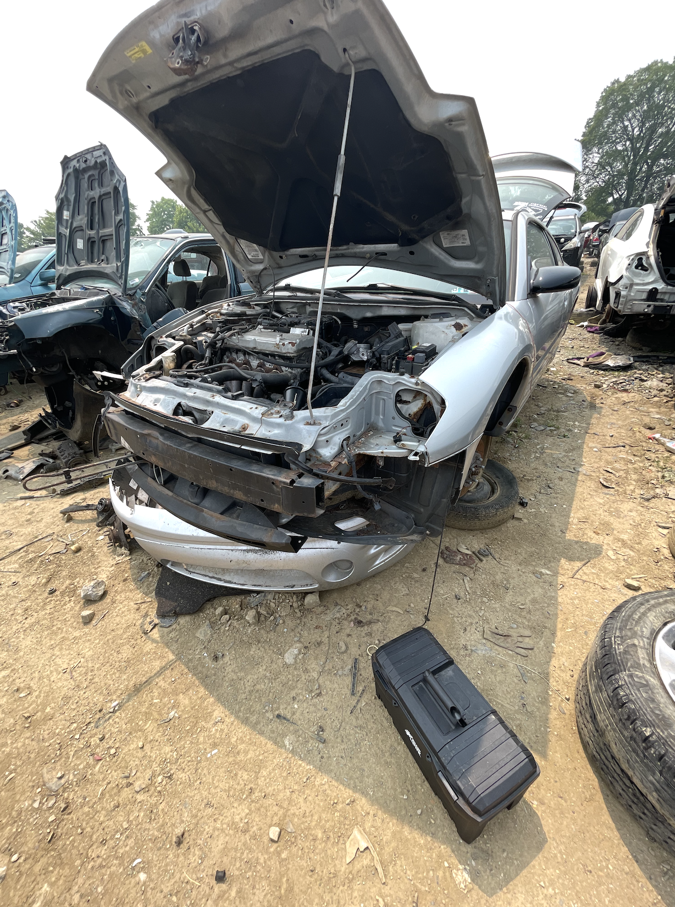
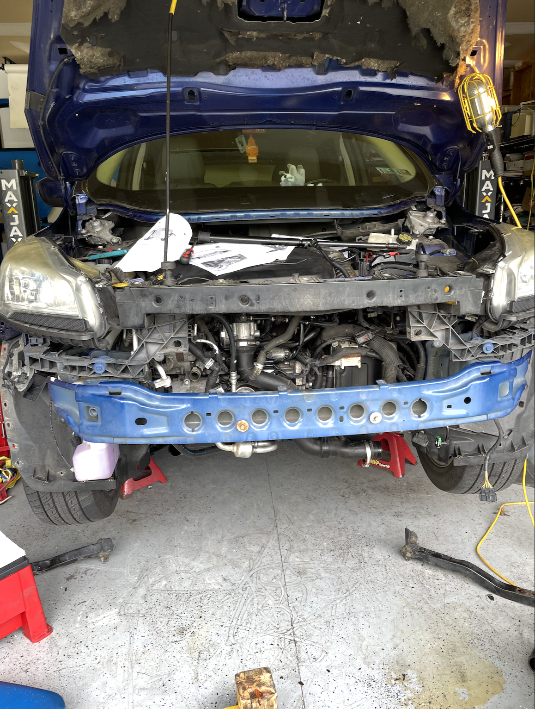
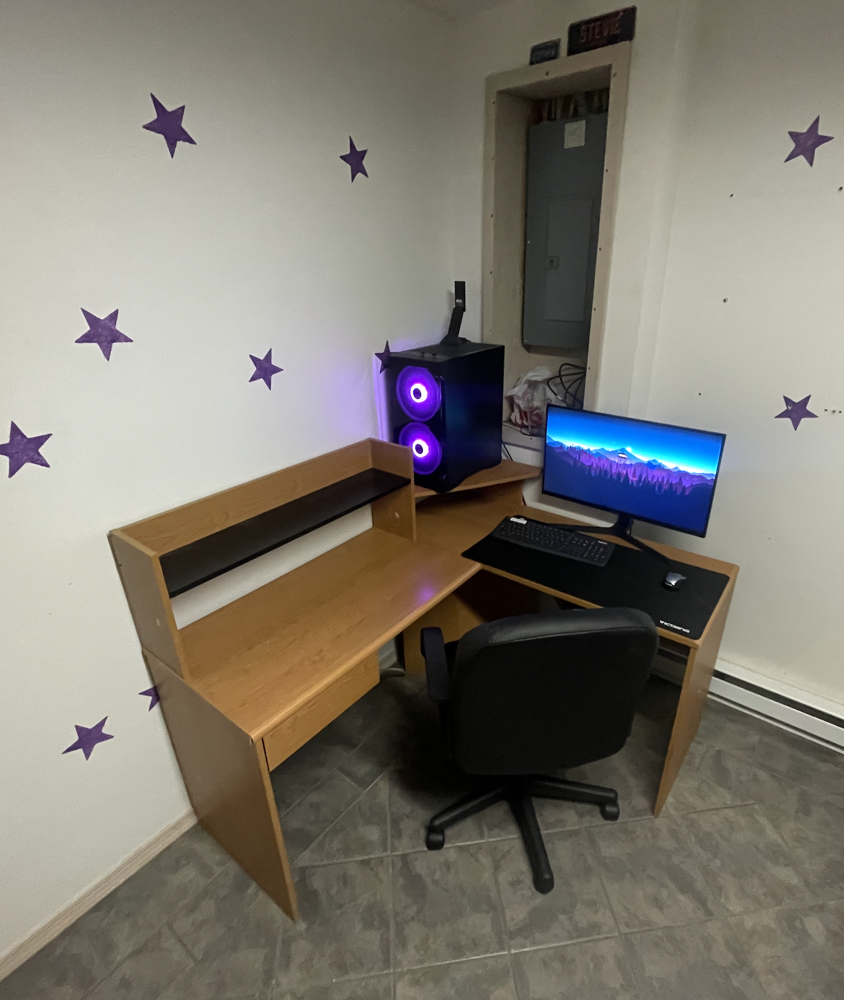
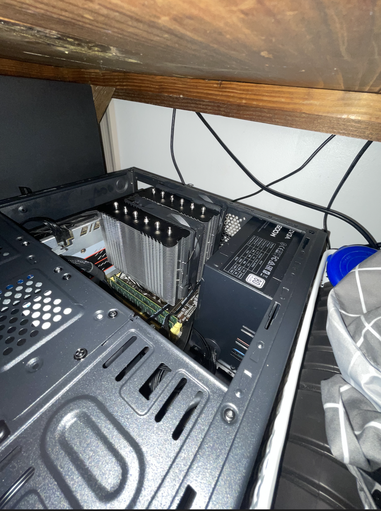

About Me
Hi, I'm Stephen Barlett. I'm a senior CS major at Cornell University in my final semester. After graduation this May I am excited to be joining the workforce as a Controls Engineer.
In my time at Cornell I have studied computer architecture, low-level programming, embedded systems, and data structures. I have served as a teaching assistant three times - twice for ECE 2300 (Digital Logic) and once for ECE3140 (Embedded Systems).
I am well versed in C/C++, Verilog, and Python. I have experience working with HDL simulation tools like Icarus Verilog and PyMTL, but also with Intel's Quartus and Cyclone V FPGAs.
My Hobbies
Automotive Mechanic



I drive a 2003 Mitsubishi Eclipse, and over the last four years of ownership I've learned from my dad how to work on it and keep it on the road. Now, I do all of the service that my car needs and I even get to use my skills to help out my family on occasion.
I've replaced power steering components, radiators, AC compressors, brakes, and many other components.
PC Building


I've never had the budget for large flashy builds, but I've always enjoyed piecing together second-hand components off of eBay into something that works. This hobby has given me an intricate understanding of how computers work and inspired my minor in ECE.